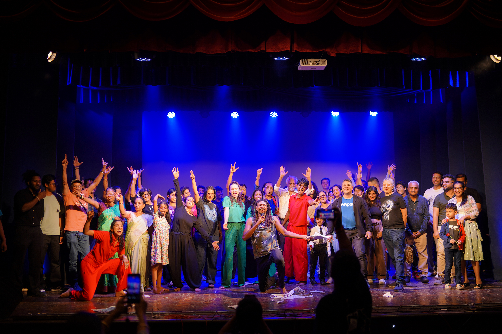

“Just beyond the surface flow the waves of life. Behind the scenes beats a human heart with a hundred stories.”
Mal Griot
Behind every bow there's a room nobody else saw: the run-throughs, the notes passed backstage, the one cue that almost didn't land. That's the part this photo actually holds — not the bow itself, but everyone in it knowing exactly what it cost to get there.
Been circling back to PeRiOdYsSiUs lately, the record that let genre be optional. It was never meant to sit still in one lane, and hearing it again, neither am I.
Pip Millett's “Ride With Me” has been the thing on loop this week — the kind of song that doesn't ask permission to be soft.
That line about the waves beneath the surface has been sitting with me all week — the hundred stories nobody claps for. Most of them never make it to a stage. A few do, and you learn to be grateful for the accident of it.

Ride With Me — Pip Millett